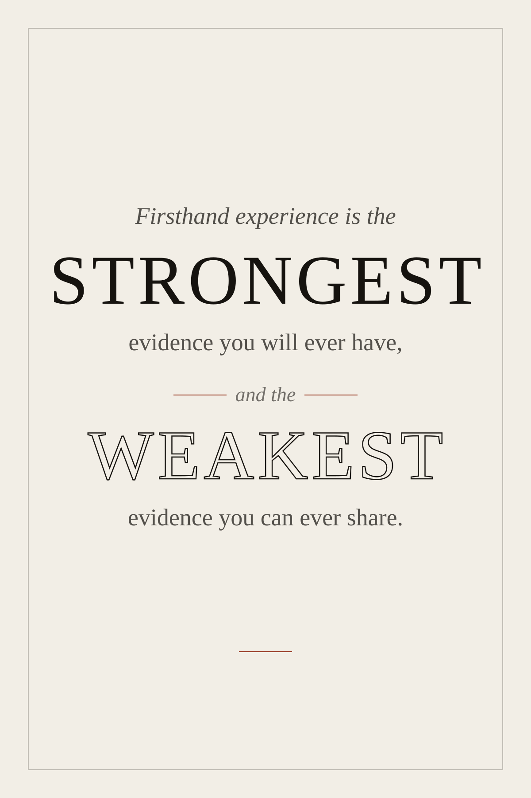

<!doctype html>
<meta charset="utf-8">
<title>Firsthand Experience</title>
<style>
  :root { color-scheme: light; }
  body {
    margin: 0;
    min-height: 100vh;
    display: grid;
    place-items: center;
    padding: 32px 16px;
    background: #2A2622;
    font: 14px/1.5 Georgia, "Times New Roman", serif;
  }
  figure { margin: 0; max-width: 760px; }
  img {
    display: block;
    width: 100%;
    height: auto;
    box-shadow: 0 24px 60px rgba(0,0,0,.45);
  }
  figcaption {
    margin-top: 20px;
    color: #B9B0A4;
    text-align: center;
    font-size: 13px;
  }
  /* Print at 24 x 36 inches. Scale in your print dialog for other sizes. */
  @page { size: 24in 36in; margin: 0; }
  @media print {
    body { background: #fff; padding: 0; display: block; }
    figure { max-width: none; }
    figcaption { display: none; }
    img { box-shadow: none; width: 100%; }
  }
</style>
<figure>
  
  <figcaption>Screen preview. Open <a href="print.html" style="color:#C98B6B">print.html</a> and hit Print for a 24 &times; 36 in poster.</figcaption>
</figure>
